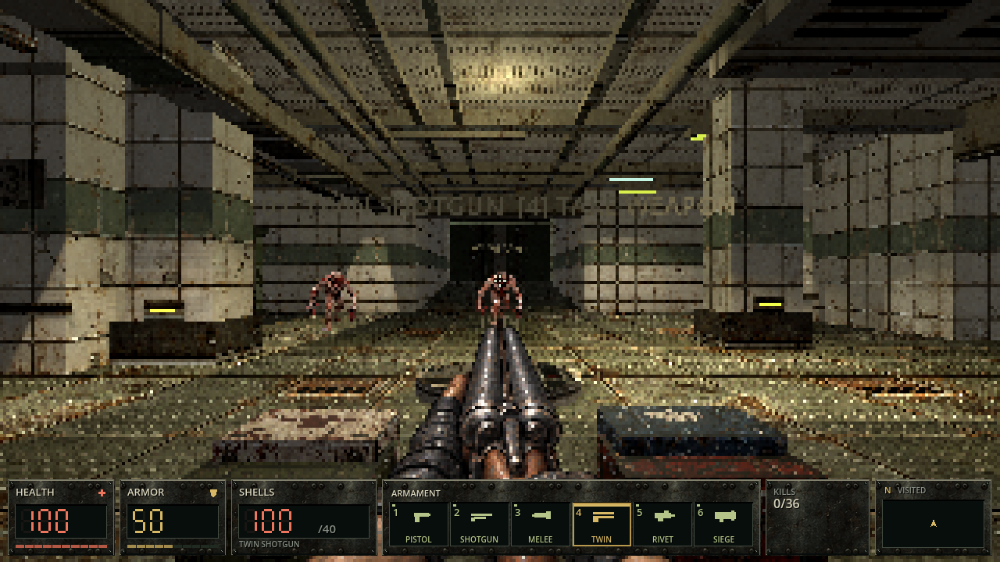
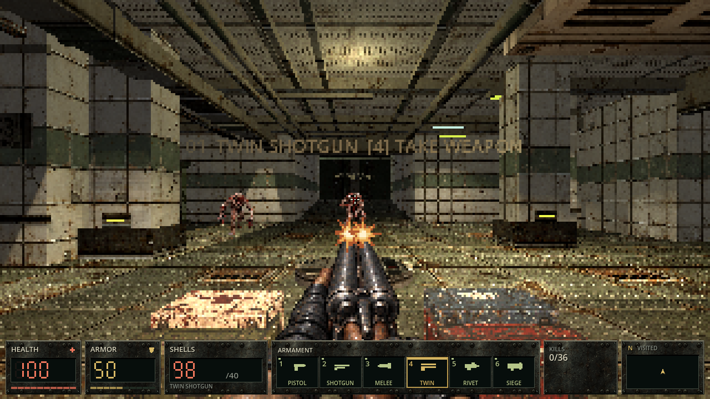
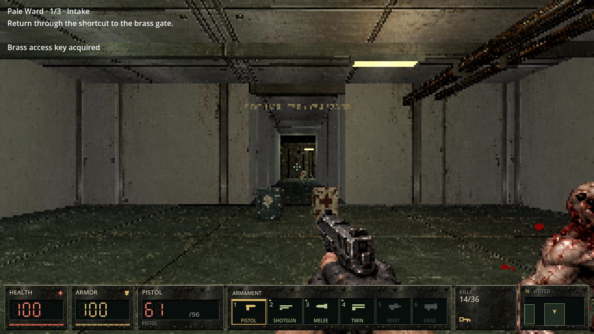

EYESORE · THE PALE WARD · PRESENTATION v8
Room materials, Twin Shotgun and industrial HUD
Three parallel implementation streams, integrated into the first Intake section. Triage, surgery and utility now have distinct native texture atlases. The Twin uses its coherent idle artwork throughout recoil and switching, with both physical barrel flashes. The HUD reads live health, armor, ammunition, owned weapons and collected keys, with a visited-area mini-map.
Saved assets, exact prompts and method · Previous Intake pass
Twin and HUD in the actual game
Controlled actual Main fixture: all weapons and ammunition granted for inspection, enemies frozen. These are native game screenshots, not ordinary route acquisition or live combat.

Corrected idle registration and live inventory panel.
Both barrel flashes use the same accepted shot event.Exported live gameplay

55 seconds into the completed Linux executable recording, with live AI and automated finite-ammo combat. Original decoded movie frame; no filters. This is separate from the frozen inspection fixtures above.Room views
Actual Main / native Compatibility renderer. Controlled doorway/detail cameras, actors frozen and enemy visuals hidden for room inspection. Original screenshot bytes; no image edits. Separate from gameplay recording and human visual acceptance.
Scope of this pass
The first six Intake rooms and their adjoining source corridors receive the material families. Geometry, progression, other eight campaign maps, combat tuning, music and sound cues are retained. Movement, enemy additions, gore, new controls/exit surfaces and sound redesign remain later tasks on the production board.